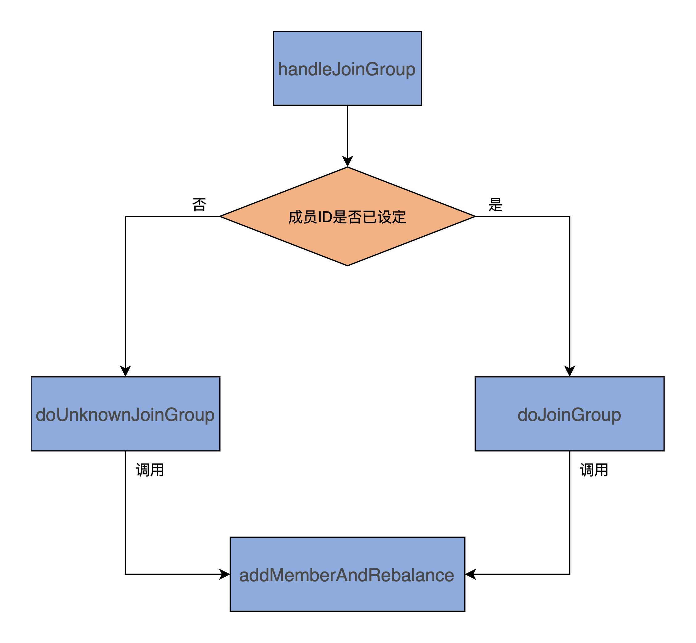
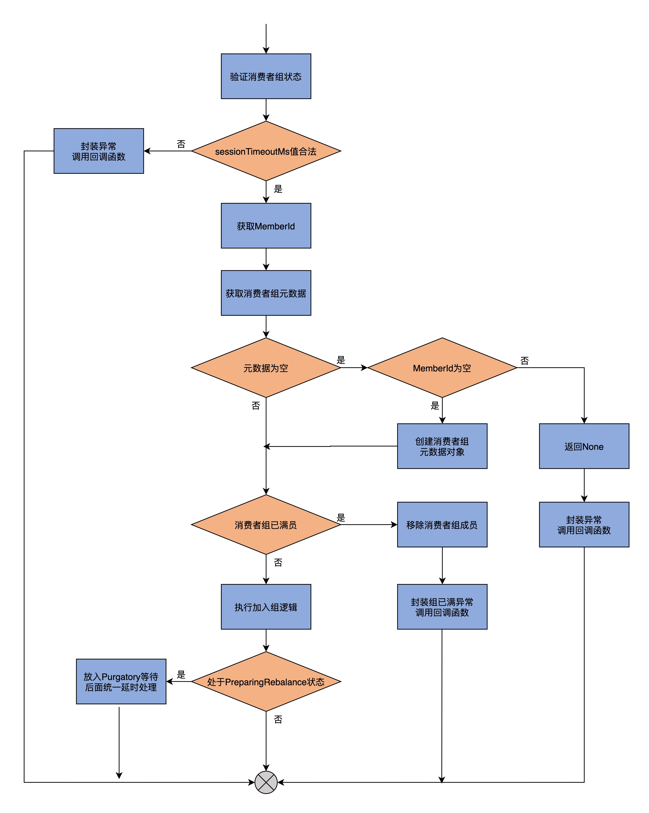
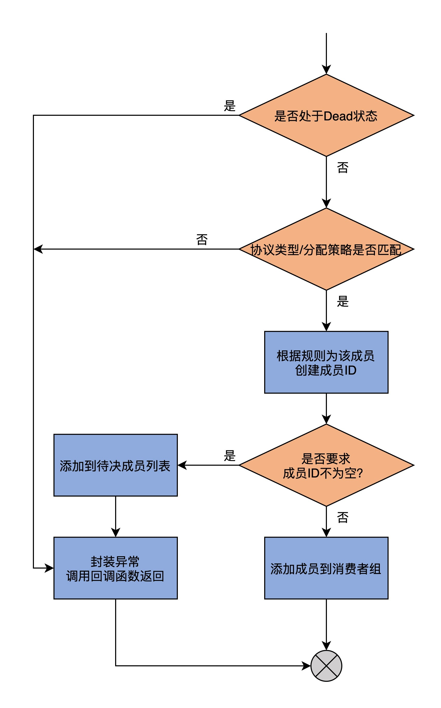
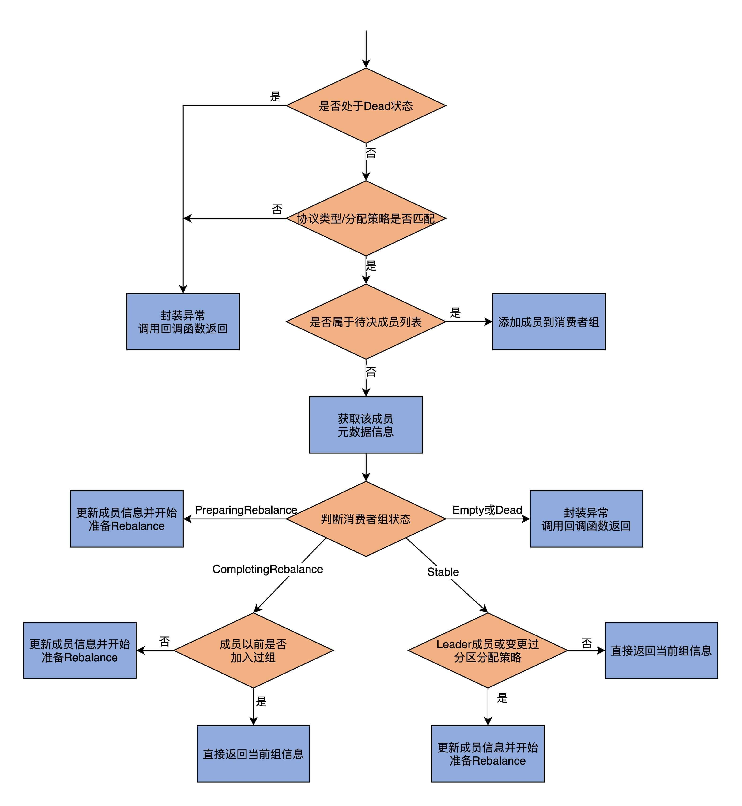
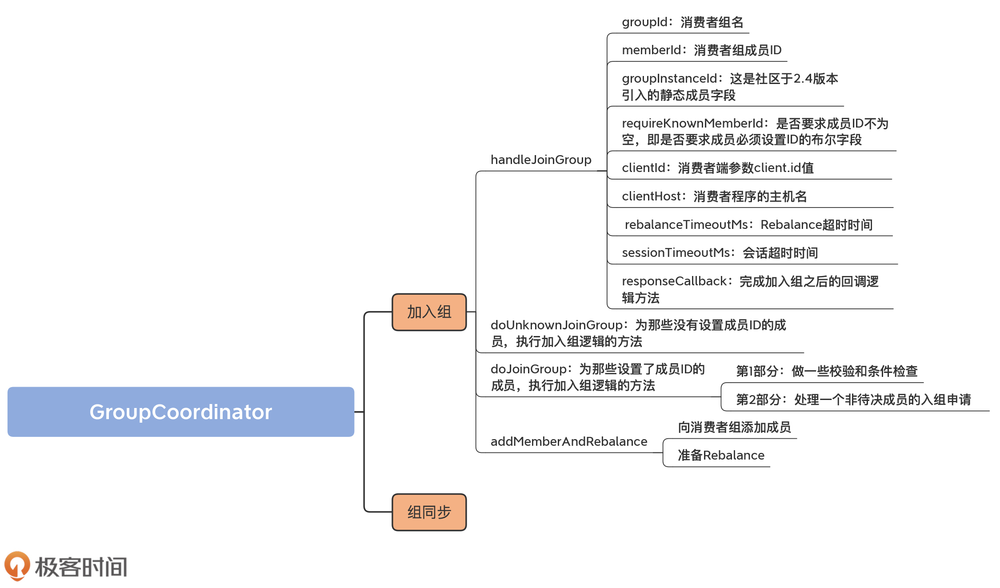

- 00 导读 构建Kafka工程和源码阅读环境、Scala语言热身.md.html
- 00 开篇词 阅读源码，逐渐成了职业进阶道路上的“必选项”.md.html
- 00 重磅加餐 带你快速入门Scala语言.md.html
- 01 日志段：保存消息文件的对象是怎么实现的？.md.html
- 02 日志（上）：日志究竟是如何加载日志段的？.md.html
- 03 日志（下）：彻底搞懂Log对象的常见操作.md.html
- 04 索引（上）：改进的二分查找算法在Kafka索引的应用.md.html
- 05 索引（下）：位移索引和时间戳索引的区别是什么？.md.html
- 06 请求通道：如何实现Kafka请求队列？.md.html
- 07 SocketServer（上）：Kafka到底是怎么应用NIO实现网络通信的？.md.html
- 08 SocketServer（中）：请求还要区分优先级？.md.html
- 09 SocketServer（下）：请求处理全流程源码分析.md.html
- 10 KafkaApis：Kafka最重要的源码入口，没有之一.md.html
- 11 Controller元数据：Controller都保存有哪些东西？有几种状态？.md.html
- 12 ControllerChannelManager：Controller如何管理请求发送？.md.html
- 13 ControllerEventManager：变身单线程后的Controller如何处理事件？.md.html
- 14 Controller选举是怎么实现的？.md.html
- 15 如何理解Controller在Kafka集群中的作用？.md.html
- 16 TopicDeletionManager： Topic是怎么被删除的？.md.html
- 17 ReplicaStateMachine：揭秘副本状态机实现原理.md.html
- 18 PartitionStateMachine：分区状态转换如何实现？.md.html
- 19 TimingWheel：探究Kafka定时器背后的高效时间轮算法.md.html
- 20 DelayedOperation：Broker是怎么延时处理请求的？.md.html
- 21 AbstractFetcherThread：拉取消息分几步？.md.html
- 22 ReplicaFetcherThread：Follower如何拉取Leader消息？.md.html
- 23 ReplicaManager（上）：必须要掌握的副本管理类定义和核心字段.md.html
- 24 ReplicaManager（中）：副本管理器是如何读写副本的？.md.html
- 25 ReplicaManager（下）：副本管理器是如何管理副本的？.md.html
- 26 MetadataCache：Broker是怎么异步更新元数据缓存的？.md.html
- 27 消费者组元数据（上）：消费者组都有哪些元数据？.md.html
- 28 消费者组元数据（下）：Kafka如何管理这些元数据？.md.html
- 29 GroupMetadataManager：组元数据管理器是个什么东西？.md.html
- 30 GroupMetadataManager：位移主题保存的只是位移吗？.md.html
- 31 GroupMetadataManager：查询位移时，不用读取位移主题？.md.html
- 32 GroupCoordinator：在Rebalance中，Coordinator如何处理成员入组？.md.html
- 33 GroupCoordinator：在Rebalance中，如何进行组同步？.md.html
- 特别放送（一）经典的Kafka学习资料有哪些？.md.html
- 特别放送（三）我是怎么度过日常一天的？.md.html
- 特别放送（二）一篇文章带你了解参与开源社区的全部流程.md.html
- 特别放送（五） Kafka 社区的重磅功能：移除 ZooKeeper 依赖.md.html
- 特别放送（四）20道经典的Kafka面试题详解.md.html
- 结束语 源码学习，我们才刚上路呢.md.html
- 捐赠
32 GroupCoordinator：在Rebalance中，Coordinator如何处理成员入组？
你好，我是胡夕。不知不觉间，课程已经接近尾声了，最后这两节课，我们来学习一下消费者组的Rebalance流程是如何完成的。
提到Rebalance，你的第一反应一定是“爱恨交加”。毕竟，如果使用得当，它能够自动帮我们实现消费者之间的负载均衡和故障转移；但如果配置失当，我们就可能触碰到它被诟病已久的缺陷：耗时长，而且会出现消费中断。
在使用消费者组的实践中，你肯定想知道，应该如何避免Rebalance。如果你不了解Rebalance的源码机制的话，就很容易掉进它无意中铺设的“陷阱”里。
举个小例子。有些人认为，Consumer端参数session.timeout.ms决定了完成一次Rebalance流程的最大时间。这种认知是不对的，实际上，这个参数是用于检测消费者组成员存活性的，即如果在这段超时时间内，没有收到该成员发给Coordinator的心跳请求，则把该成员标记为Dead，而且要显式地将其从消费者组中移除，并触发新一轮的Rebalance。而真正决定单次Rebalance所用最大时长的参数，是Consumer端的max.poll.interval.ms。显然，如果没有搞懂这部分的源码，你就没办法为这些参数设置合理的数值。
总体而言， Rebalance的流程大致分为两大步：加入组（JoinGroup）和组同步（SyncGroup）。
加入组，是指消费者组下的各个成员向Coordinator发送JoinGroupRequest请求加入进组的过程。这个过程有一个超时时间，如果有成员在超时时间之内，无法完成加入组操作，它就会被排除在这轮Rebalance之外。
组同步，是指当所有成员都成功加入组之后，Coordinator指定其中一个成员为Leader，然后将订阅分区信息发给Leader成员。接着，所有成员（包括Leader成员）向Coordinator发送SyncGroupRequest请求。需要注意的是，只有Leader成员发送的请求中包含了订阅分区消费分配方案，在其他成员发送的请求中，这部分的内容为空。当Coordinator接收到分配方案后，会通过向成员发送响应的方式，通知各个成员要消费哪些分区。
当组同步完成后，Rebalance宣告结束。此时，消费者组处于正常工作状态。
今天，我们就学习下第一大步，也就是加入组的源码实现，它们位于GroupCoordinator.scala文件中。下节课，我们再深入地学习组同步的源码实现。
要搞懂加入组的源码机制，我们必须要学习4个方法，分别是handleJoinGroup、doUnknownJoinGroup、doJoinGroup和addMemberAndRebalance。handleJoinGroup是执行加入组的顶层方法，被KafkaApis类调用，该方法依据给定消费者组成员是否了设置成员ID，来决定是调用doUnknownJoinGroup还是doJoinGroup，前者对应于未设定成员ID的情形，后者对应于已设定成员ID的情形。而这两个方法，都会调用addMemberAndRebalance，执行真正的加入组逻辑。为了帮助你理解它们之间的交互关系，我画了一张图，借用它展示了这4个方法的调用顺序。

handleJoinGroup方法
如果你翻开KafkaApis.scala这个API入口文件，就可以看到，处理JoinGroupRequest请求的方法是handleJoinGroupRequest。而它的主要逻辑，就是调用GroupCoordinator的handleJoinGroup方法，来处理消费者组成员发送过来的加入组请求，所以，我们要具体学习一下handleJoinGroup方法。先看它的方法签名：
def handleJoinGroup(
groupId: String, // 消费者组名
memberId: String, // 消费者组成员ID
groupInstanceId: Option[String], // 组实例ID，用于标识静态成员
requireKnownMemberId: Boolean, // 是否需要成员ID不为空
clientId: String, // client.id值
clientHost: String, // 消费者程序主机名
rebalanceTimeoutMs: Int, // Rebalance超时时间,默认是max.poll.interval.ms值
sessionTimeoutMs: Int, // 会话超时时间
protocolType: String, // 协议类型
protocols: List[(String, Array[Byte])], // 按照分配策略分组的订阅分区
responseCallback: JoinCallback // 回调函数
): Unit = {
......
}
这个方法的参数有很多，我介绍几个比较关键的。接下来在阅读其他方法的源码时，你还会看到这些参数，所以，这里你一定要提前掌握它们的含义。
- groupId：消费者组名。
- memberId：消费者组成员ID。如果成员是新加入的，那么该字段是空字符串。
- groupInstanceId：这是社区于2.4版本引入的静态成员字段。静态成员的引入，可以有效避免因系统升级或程序更新而导致的Rebalance场景。它属于比较高阶的用法，而且目前还没有被大规模使用，因此，这里你只需要简单了解一下它的作用。另外，后面在讲其他方法时，我会直接省略静态成员的代码，我们只关注核心逻辑就行了。
- requireKnownMemberId：是否要求成员ID不为空，即是否要求成员必须设置ID的布尔字段。这个字段如果为True的话，那么，Kafka要求消费者组成员必须设置ID。未设置ID的成员，会被拒绝加入组。直到它设置了ID之后，才能重新加入组。
- clientId：消费者端参数client.id值。Coordinator使用它来生成memberId。memberId的格式是clientId值-UUID。
- clientHost：消费者程序的主机名。
- rebalanceTimeoutMs：Rebalance超时时间。如果在这个时间段内，消费者组成员没有完成加入组的操作，就会被禁止入组。
- sessionTimeoutMs：会话超时时间。如果消费者组成员无法在这段时间内向Coordinator汇报心跳，那么将被视为“已过期”，从而引发新一轮Rebalance。
- responseCallback：完成加入组之后的回调逻辑方法。当消费者组成员成功加入组之后，需要执行该方法。
说完了方法签名，我们看下它的主体代码：
// 验证消费者组状态的合法性
validateGroupStatus(groupId, ApiKeys.JOIN_GROUP).foreach { error =>
responseCallback(JoinGroupResult(memberId, error))
return
}
// 确保sessionTimeoutMs介于
// [group.min.session.timeout.ms值，group.max.session.timeout.ms值]之间
// 否则抛出异常，表示超时时间设置无效
if (sessionTimeoutMs < groupConfig.groupMinSessionTimeoutMs ||
sessionTimeoutMs > groupConfig.groupMaxSessionTimeoutMs) {
responseCallback(JoinGroupResult(memberId, Errors.INVALID_SESSION_TIMEOUT))
} else {
// 消费者组成员ID是否为空
val isUnknownMember = memberId == JoinGroupRequest.UNKNOWN_MEMBER_ID
// 获取消费者组信息，如果组不存在，就创建一个新的消费者组
groupManager.getOrMaybeCreateGroup(groupId, isUnknownMember) match {
case None =>
responseCallback(JoinGroupResult(memberId, Errors.UNKNOWN_MEMBER_ID))
case Some(group) =>
group.inLock {
// 如果该消费者组已满员
if (!acceptJoiningMember(group, memberId)) {
// 移除该消费者组成员
group.remove(memberId)
group.removeStaticMember(groupInstanceId)
// 封装异常表明组已满员
responseCallback(JoinGroupResult(
JoinGroupRequest.UNKNOWN_MEMBER_ID,
Errors.GROUP_MAX_SIZE_REACHED))
// 如果消费者组成员ID为空
} else if (isUnknownMember) {
// 为空ID成员执行加入组操作
doUnknownJoinGroup(group, groupInstanceId, requireKnownMemberId, clientId, clientHost, rebalanceTimeoutMs, sessionTimeoutMs, protocolType, protocols, responseCallback)
} else {
// 为非空ID成员执行加入组操作
doJoinGroup(group, memberId, groupInstanceId, clientId, clientHost, rebalanceTimeoutMs, sessionTimeoutMs, protocolType, protocols, responseCallback)
}
// 如果消费者组正处于PreparingRebalance状态
if (group.is(PreparingRebalance)) {
// 放入Purgatory，等待后面统一延时处理
joinPurgatory.checkAndComplete(GroupKey(group.groupId))
}
}
}
}
为了方便你更直观地理解，我画了一张图来说明它的完整流程。

第1步，调用validateGroupStatus方法验证消费者组状态的合法性。所谓的合法性，也就是消费者组名groupId不能为空，以及JoinGroupRequest请求发送给了正确的Coordinator，这两者必须同时满足。如果没有通过这些检查，那么，handleJoinGroup方法会封装相应的错误，并调用回调函数返回。否则，就进入到下一步。
第2步，代码检验sessionTimeoutMs的值是否介于[group.min.session.timeout.ms，group.max.session.timeout.ms]之间，如果不是，就认定该值是非法值，从而封装一个对应的异常调用回调函数返回，这两个参数分别表示消费者组允许配置的最小和最大会话超时时间；如果是的话，就进入下一步。
第3步，代码获取当前成员的ID信息，并查看它是否为空。之后，通过GroupMetadataManager获取消费者组的元数据信息，如果该组的元数据信息存在，则进入到下一步；如果不存在，代码会看当前成员ID是否为空，如果为空，就创建一个空的元数据对象，然后进入到下一步，如果不为空，则返回None。一旦返回了None，handleJoinGroup方法会封装“未知成员ID”的异常，调用回调函数返回。
第4步，检查当前消费者组是否已满员。该逻辑是通过acceptJoiningMember方法实现的。这个方法根据消费者组状态确定是否满员。这里的消费者组状态有三种。
状态一：如果是Empty或Dead状态，肯定不会是满员，直接返回True，表示可以接纳申请入组的成员；
状态二：如果是PreparingRebalance状态，那么，批准成员入组的条件是必须满足一下两个条件之一。
- 该成员是之前已有的成员，且当前正在等待加入组；
- 当前等待加入组的成员数小于Broker端参数group.max.size值。
只要满足这两个条件中的任意一个，当前消费者组成员都会被批准入组。
状态三：如果是其他状态，那么，入组的条件是该成员是已有成员，或者是当前组总成员数小于Broker端参数group.max.size值。需要注意的是，这里比较的是组当前的总成员数，而不是等待入组的成员数，这是因为，一旦Rebalance过渡到CompletingRebalance之后，没有完成加入组的成员，就会被移除。
倘若成员不被批准入组，那么，代码需要将该成员从元数据缓存中移除，同时封装“组已满员”的异常，并调用回调函数返回；如果成员被批准入组，则根据Member ID是否为空，就执行doUnknownJoinGroup或doJoinGroup方法执行加入组的逻辑。
第5步是尝试完成JoinGroupRequest请求的处理。如果消费者组处于PreparingRebalance状态，那么，就将该请求放入Purgatory，尝试立即完成；如果是其它状态，则无需将请求放入Purgatory。毕竟，我们处理的是加入组的逻辑，而此时消费者组的状态应该要变更到PreparingRebalance后，Rebalance才能完成加入组操作。当然，如果延时请求不能立即完成，则交由Purgatory统一进行延时处理。
至此，handleJoinGroup逻辑结束。
实际上，我们可以看到，真正执行加入组逻辑的是doUnknownJoinGroup和doJoinGroup这两个方法。那么，接下来，我们就来学习下这两个方法。
doUnknownJoinGroup方法
如果是全新的消费者组成员加入组，那么，就需要为它们执行doUnknownJoinGroup方法，因为此时，它们的Member ID尚未生成。
除了memberId之外，该方法的输入参数与handleJoinGroup方法几乎一模一样，我就不一一地详细介绍了，我们直接看它的源码。为了便于你理解，我省略了关于静态成员以及DEBUG/INFO调试的部分代码。
group.inLock {
// Dead状态
if (group.is(Dead)) {
// 封装异常调用回调函数返回
responseCallback(JoinGroupResult(
JoinGroupRequest.UNKNOWN_MEMBER_ID,
Errors.COORDINATOR_NOT_AVAILABLE))
// 成员配置的协议类型/分区消费分配策略与消费者组的不匹配
} else if (!group.supportsProtocols(protocolType, MemberMetadata.plainProtocolSet(protocols))) {
responseCallback(JoinGroupResult(JoinGroupRequest.UNKNOWN_MEMBER_ID, Errors.INCONSISTENT_GROUP_PROTOCOL))
} else {
// 根据规则为该成员创建成员ID
val newMemberId = group.generateMemberId(clientId, groupInstanceId)
// 如果配置了静态成员
if (group.hasStaticMember(groupInstanceId)) {
......
// 如果要求成员ID不为空
} else if (requireKnownMemberId) {
......
group.addPendingMember(newMemberId)
addPendingMemberExpiration(group, newMemberId, sessionTimeoutMs)
responseCallback(JoinGroupResult(newMemberId, Errors.MEMBER_ID_REQUIRED))
} else {
......
// 添加成员
addMemberAndRebalance(rebalanceTimeoutMs, sessionTimeoutMs, newMemberId, groupInstanceId,
clientId, clientHost, protocolType, protocols, group, responseCallback)
}
}
}
为了方便你理解，我画了一张图来展示下这个方法的流程。

首先，代码会检查消费者组的状态。
如果是Dead状态，则封装异常，然后调用回调函数返回。你可能会觉得奇怪，既然是向该组添加成员，为什么组状态还能是Dead呢？实际上，这种情况是可能的。因为，在成员加入组的同时，可能存在另一个线程，已经把组的元数据信息从Coordinator中移除了。比如，组对应的Coordinator发生了变更，移动到了其他的Broker上，此时，代码封装一个异常返回给消费者程序，后者会去寻找最新的Coordinator，然后重新发起加入组操作。
如果状态不是Dead，就检查该成员的协议类型以及分区消费分配策略，是否与消费者组当前支持的方案匹配，如果不匹配，依然是封装异常，然后调用回调函数返回。这里的匹配与否，是指成员的协议类型与消费者组的是否一致，以及成员设定的分区消费分配策略是否被消费者组下的其它成员支持。
如果这些检查都顺利通过，接着，代码就会为该成员生成成员ID，生成规则是clientId-UUID。这便是generateMemberId方法做的事情。然后，handleJoinGroup方法会根据requireKnownMemberId的取值，来决定下面的逻辑路径：
- 如果该值为True，则将该成员加入到待决成员列表（Pending Member List）中，然后封装一个异常以及生成好的成员ID，将该成员的入组申请“打回去”，令其分配好了成员ID之后再重新申请；
- 如果为False，则无需这么苛刻，直接调用addMemberAndRebalance方法将其加入到组中。至此，handleJoinGroup方法结束。
通常来说，如果你没有启用静态成员机制的话，requireKnownMemberId的值是True，这是由KafkaApis中handleJoinGroupRequest方法的这行语句决定的：
val requireKnownMemberId = joinGroupRequest.version >= 4 && groupInstanceId.isEmpty
可见， 如果你使用的是比较新的Kafka客户端版本，而且没有配置过Consumer端参数group.instance.id的话，那么，这个字段的值就是True，这说明，Kafka要求消费者成员加入组时，必须要分配好成员ID。
关于addMemberAndRebalance方法的源码，一会儿在学习doJoinGroup方法时，我再给你具体解释。
doJoinGroup方法
接下来，我们看下doJoinGroup方法。这是为那些设置了成员ID的成员，执行加入组逻辑的方法。它的输入参数全部承袭自handleJoinGroup方法输入参数，你应该已经很熟悉了，因此，我们直接看它的源码实现。由于代码比较长，我分成两个部分来介绍。同时，我再画一张图，帮助你理解整个方法的逻辑。

第1部分
这部分主要做一些校验和条件检查。
// 如果是Dead状态，封装COORDINATOR_NOT_AVAILABLE异常调用回调函数返回
if (group.is(Dead)) {
responseCallback(JoinGroupResult(memberId, Errors.COORDINATOR_NOT_AVAILABLE))
// 如果协议类型或分区消费分配策略与消费者组的不匹配
// 封装INCONSISTENT_GROUP_PROTOCOL异常调用回调函数返回
} else if (!group.supportsProtocols(protocolType, MemberMetadata.plainProtocolSet(protocols))) {
responseCallback(JoinGroupResult(memberId, Errors.INCONSISTENT_GROUP_PROTOCOL))
// 如果是待决成员，由于这次分配了成员ID，故允许加入组
} else if (group.isPendingMember(memberId)) {
if (groupInstanceId.isDefined) {
......
} else {
......
// 令其加入组
addMemberAndRebalance(rebalanceTimeoutMs, sessionTimeoutMs, memberId, groupInstanceId,
clientId, clientHost, protocolType, protocols, group, responseCallback)
}
} else {
// 第二部分代码......
}
doJoinGroup方法开头和doUnkwownJoinGroup非常类似，也是判断是否处于Dead状态，并且检查协议类型和分区消费分配策略是否与消费者组的相匹配。
不同的是，doJoinGroup要判断当前申请入组的成员是否是待决成员。如果是的话，那么，这次成员已经分配好了成员ID，因此，就直接调用addMemberAndRebalance方法令其入组；如果不是的话，那么，方法进入到第2部分，即处理一个非待决成员的入组申请。
第2部分
代码如下：
// 获取该成员的元数据信息
val member = group.get(memberId)
group.currentState match {
// 如果是PreparingRebalance状态
case PreparingRebalance =>
// 更新成员信息并开始准备Rebalance
updateMemberAndRebalance(group, member, protocols, responseCallback)
// 如果是CompletingRebalance状态
case CompletingRebalance =>
// 如果成员以前申请过加入组
if (member.matches(protocols)) {
// 直接返回当前组信息
responseCallback(JoinGroupResult(
members = if (group.isLeader(memberId)) {
group.currentMemberMetadata
} else {
List.empty
},
memberId = memberId,
generationId = group.generationId,
protocolType = group.protocolType,
protocolName = group.protocolName,
leaderId = group.leaderOrNull,
error = Errors.NONE))
// 否则，更新成员信息并开始准备Rebalance
} else {
updateMemberAndRebalance(group, member, protocols, responseCallback)
}
// 如果是Stable状态
case Stable =>
val member = group.get(memberId)
// 如果成员是Leader成员，或者成员变更了分区分配策略
if (group.isLeader(memberId) || !member.matches(protocols)) {
// 更新成员信息并开始准备Rebalance
updateMemberAndRebalance(group, member, protocols, responseCallback)
} else {
responseCallback(JoinGroupResult(
members = List.empty,
memberId = memberId,
generationId = group.generationId,
protocolType = group.protocolType,
protocolName = group.protocolName,
leaderId = group.leaderOrNull,
error = Errors.NONE))
}
// 如果是其它状态，封装异常调用回调函数返回
case Empty | Dead =>
warn(s"Attempt to add rejoining member $memberId of group ${group.groupId} in " +
s"unexpected group state ${group.currentState}")
responseCallback(JoinGroupResult(memberId, Errors.UNKNOWN_MEMBER_ID))
}
这部分代码的第1步，是获取要加入组成员的元数据信息。
第2步，是查询消费者组的当前状态。这里有4种情况。
如果是PreparingRebalance状态，就说明消费者组正要开启Rebalance流程，那么，调用updateMemberAndRebalance方法更新成员信息，并开始准备Rebalance即可。
如果是CompletingRebalance状态，那么，就判断一下，该成员的分区消费分配策略与订阅分区列表是否和已保存记录中的一致，如果相同，就说明该成员已经应该发起过加入组的操作，并且Coordinator已经批准了，只是该成员没有收到，因此，针对这种情况，代码构造一个JoinGroupResult对象，直接返回当前的组信息给成员。但是，如果protocols不相同，那么，就说明成员变更了订阅信息或分配策略，就要调用updateMemberAndRebalance方法，更新成员信息，并开始准备新一轮Rebalance。
如果是Stable状态，那么，就判断该成员是否是Leader成员，或者是它的订阅信息或分配策略发生了变更。如果是这种情况，就调用updateMemberAndRebalance方法强迫一次新的Rebalance。否则的话，返回当前组信息给该成员即可，通知它们可以发起Rebalance的下一步操作。
如果这些状态都不是，而是Empty或Dead状态，那么，就封装UNKNOWN_MEMBER_ID异常，并调用回调函数返回。
可以看到，这部分代码频繁地调用updateMemberAndRebalance方法。如果你翻开它的代码，会发现，它仅仅做两件事情。
- 更新组成员信息；调用GroupMetadata的updateMember方法来更新消费者组成员；
- 准备Rebalance：这一步的核心思想，是将消费者组状态变更到PreparingRebalance，然后创建DelayedJoin对象，并交由Purgatory，等待延时处理加入组操作。
这个方法的代码行数不多，而且逻辑很简单，就是变更消费者组状态，以及处理延时请求并放入Purgatory，因此，我不展开说了，你可以自行阅读下这部分代码。
addMemberAndRebalance方法
现在，我们学习下doUnknownJoinGroup和doJoinGroup方法都会用到的addMemberAndRebalance方法。从名字上来看，它的作用有两个：
向消费者组添加成员；
准备Rebalance。
private def addMemberAndRebalance( rebalanceTimeoutMs: Int, sessionTimeoutMs: Int, memberId: String, groupInstanceId: Option[String], clientId: String, clientHost: String, protocolType: String, protocols: List[(String, Array[Byte])], group: GroupMetadata, callback: JoinCallback): Unit = { // 创建MemberMetadata对象实例 val member = new MemberMetadata(
memberId, group.groupId, groupInstanceId, clientId, clientHost, rebalanceTimeoutMs, sessionTimeoutMs, protocolType, protocols)// 标识该成员是新成员 member.isNew = true // 如果消费者组准备开启首次Rebalance，设置newMemberAdded为True if (group.is(PreparingRebalance) && group.generationId == 0)
group.newMemberAdded = true// 将该成员添加到消费者组 group.add(member, callback) // 设置下次心跳超期时间 completeAndScheduleNextExpiration(group, member, NewMemberJoinTimeoutMs) if (member.isStaticMember) {
info(s"Adding new static member $groupInstanceId to group ${group.groupId} with member id $memberId.") group.addStaticMember(groupInstanceId, memberId)} else {
// 从待决成员列表中移除 group.removePendingMember(memberId)} // 准备开启Rebalance maybePrepareRebalance(group, s”Adding new member \(memberId with group instance id \)groupInstanceId”) }
这个方法的参数列表虽然很长，但我相信，你对它们已经非常熟悉了，它们都是承袭自其上层调用方法的参数。
我来介绍一下这个方法的执行逻辑。
第1步，该方法会根据传入参数创建一个MemberMetadata对象实例，并设置isNew字段为True，标识其是一个新成员。isNew字段与心跳设置相关联，你可以阅读下MemberMetadata的hasSatisfiedHeartbeat方法的代码，搞明白该字段是如何帮助Coordinator确认消费者组成员心跳的。
第2步，代码会判断消费者组是否是首次开启Rebalance。如果是的话，就把newMemberAdded字段设置为True；如果不是，则无需执行这个赋值操作。这个字段的作用，是Kafka为消费者组Rebalance流程做的一个性能优化。大致的思想，是在消费者组首次进行Rebalance时，让Coordinator多等待一段时间，从而让更多的消费者组成员加入到组中，以免后来者申请入组而反复进行Rebalance。这段多等待的时间，就是Broker端参数group.initial.rebalance.delay.ms的值。这里的newMemberAdded字段，就是用于判断是否需要多等待这段时间的一个变量。
我们接着说回addMemberAndRebalance方法。该方法的第3步是调用GroupMetadata的add方法，将新成员信息加入到消费者组元数据中，同时设置该成员的下次心跳超期时间。
第4步，代码将该成员从待决成员列表中移除。毕竟，它已经正式加入到组中了，就不需要待在待决列表中了。
第5步，调用maybePrepareRebalance方法，准备开启Rebalance。
总结
至此，我们学完了Rebalance流程的第一大步，也就是加入组的源码学习。在这一步中，你要格外注意，加入组时是区分有无消费者组成员ID。对于未设定成员ID的分支，代码调用doUnkwonwJoinGroup为成员生成ID信息；对于已设定成员ID的分支，则调用doJoinGroup方法。而这两个方法，底层都是调用addMemberAndRebalance方法，实现将消费者组成员添加进组的逻辑。
我们来简单回顾一下这节课的重点。
- Rebalance流程：包括JoinGroup和SyncGroup两大步。
- handleJoinGroup方法：Coordinator端处理成员加入组申请的方法。
- Member Id：成员ID。Kafka源码根据成员ID的有无，决定调用哪种加入组逻辑方法，比如doUnknownJoinGroup或doJoinGroup方法。
- addMemberAndRebalance方法：实现加入组功能的实际方法，用于完成“加入组+开启Rebalance”这两个操作。

当所有成员都成功加入到组之后，所有成员会开启Rebalance的第二大步：组同步。在这一步中，成员会发送SyncGroupRequest请求给Coordinator。那么，Coordinator又是如何应对的呢？咱们下节课见分晓。
课后讨论
今天，我们曾多次提到maybePrepareRebalance方法，从名字上看，它并不一定会开启Rebalance。那么，你能否结合源码说说看，到底什么情况下才能开启Rebalance？
欢迎在留言区写下你的思考和答案，跟我交流讨论，也欢迎你把今天的内容分享给你的朋友。
© 2019 - 2023 Liangliang Lee. Powered by gin and hexo-theme-book.